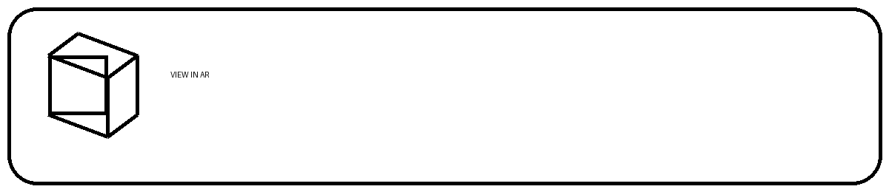

Mobile AR
iPhone 또는 iPad의 Safari에서 아래 버튼을 누르면 AR Quick Look이 실행됩니다.

AR이 실행되지 않고 파일 내용이 보이면 Safari에서 이 페이지를 열었는지 확인하고, GitHub Pages에서 index.html과 1234.usdz가 같은 폴더에 있는지 확인하세요.
USDZ 파일 직접 열기iPhone 또는 iPad의 Safari에서 아래 버튼을 누르면 AR Quick Look이 실행됩니다.

AR이 실행되지 않고 파일 내용이 보이면 Safari에서 이 페이지를 열었는지 확인하고, GitHub Pages에서 index.html과 1234.usdz가 같은 폴더에 있는지 확인하세요.
USDZ 파일 직접 열기